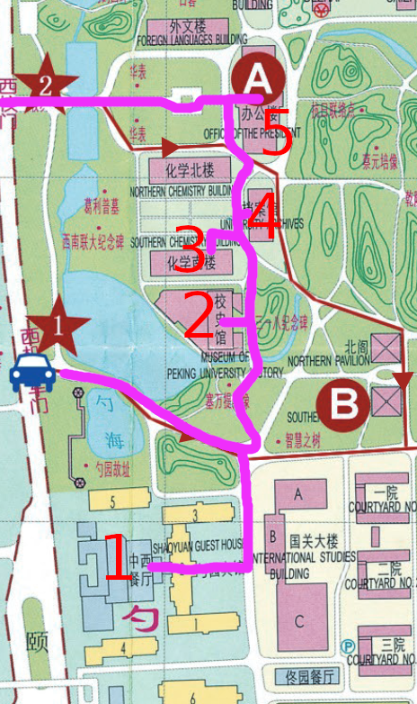

Peking University Walking Tour!
喂！在这个部分，你会跟我一起旅行北京大学。我已经准备了一个旅行计划。这家大学有漂亮又活泼(huo2po, lively)。
它在中国的首都，所以很多个东西在附近。在下面，有一张计划地图图片，一条计划录音，和写的录音词。

- 开始在西机动车门
- 从西机动车门进入学校，上右转，然后上右转
- 你的目的地（勺园宾馆）会在左传
- 进入中西餐厅从勺园宾馆
- 离开东出口，然后走路北到校史馆
- 检查校史馆以后，离开东出口然后走路北到化学南楼，给它检查一下
- 离开化学南楼的北出口，马上右边有档案馆，进入那儿。
- 离开，然后走路北到办公楼，检查一下。
- 离开西出口。笔直向前有西门，去那儿离开。